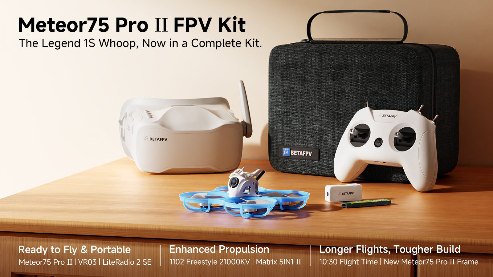
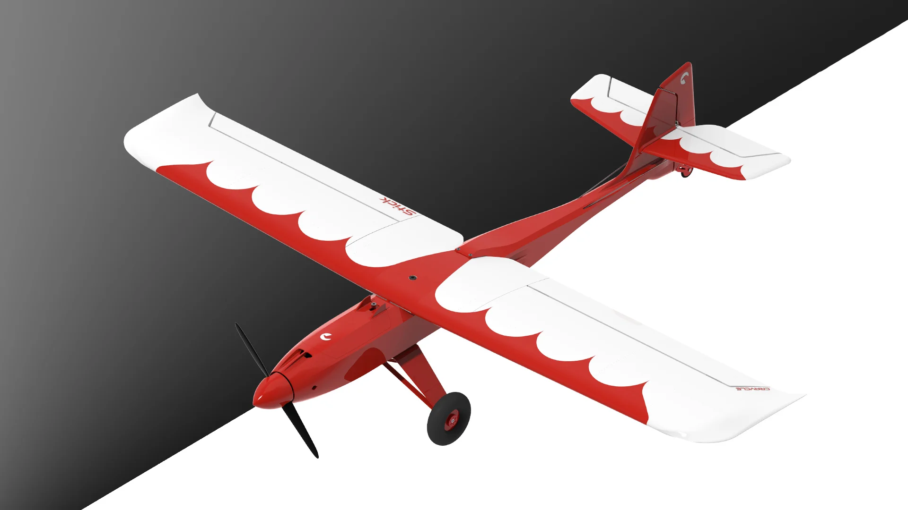
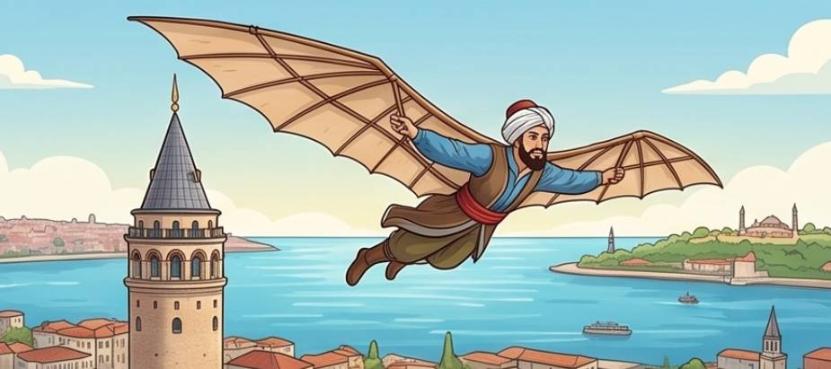
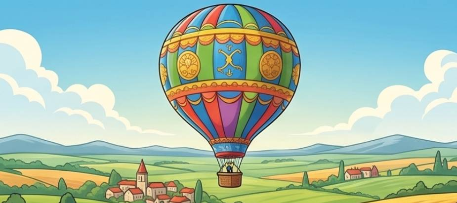
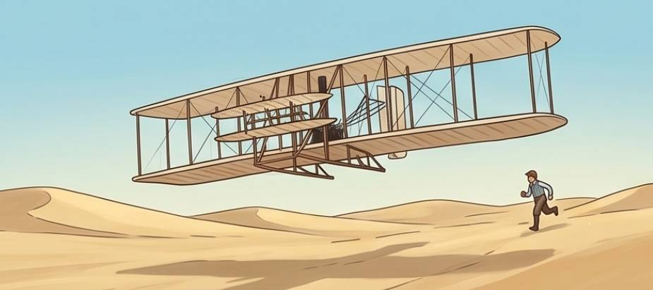
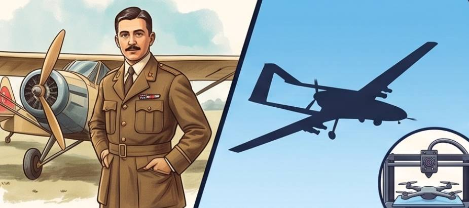
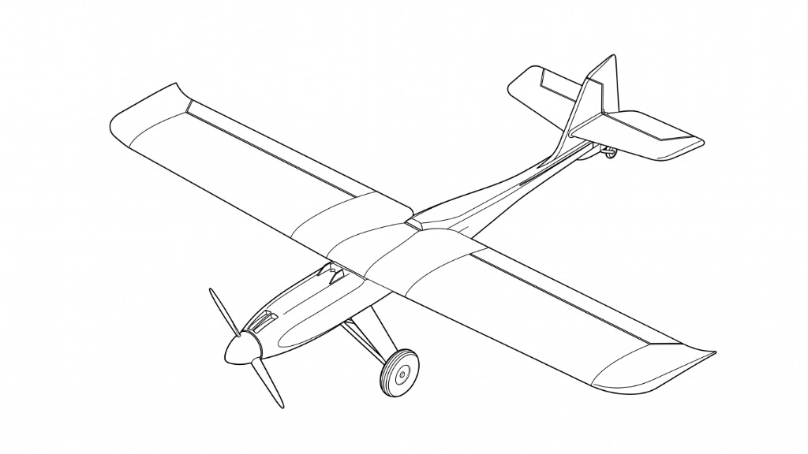
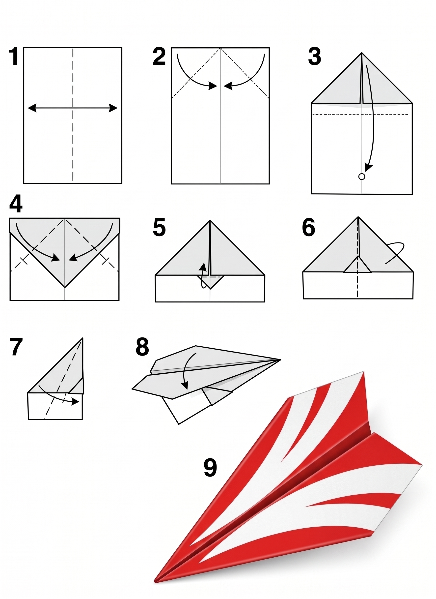

Gökyüzü Mühendisliği Kulübüne Hoş Geldiniz! 🚀
Yıl boyu sürecek harika bir havacılık ve mühendislik macerası bugün başlıyor!
Ben Kaptan Öğretmeniniz!
Bu sene gökyüzünü hep beraber keşfedeceğiz.
Bu sınıfta sadece ders dinlemeyeceğiz; gerçek bir havacılık hangarı kuracağız! Uçakların nasıl uçtuğunu keşfedecek, 3D yazıcılarla kendi uçağımızı inşa edecek ve FPV yarış droneları uçuracağız!
🌟 Bugünkü Uçuş Planımız (80 Dakika)
Sırayla Mikrofon Sende: Geleceğin Pilotları! 🎤
Sıran geldiğinde adını söyle ve bize en sevdiğin rengi fısılda!
💬 Sıran Geldiğinde Bize Şunları Söyle:
Sana hangi isimle seslenmemizi istersin?
2. dönem üreteceğimiz uçağı senin sevdiğin bu renge boyayabiliriz!
Rengarenk bir papağan mı, hızlı bir kırlangıç mı, yoksa akıllı bir baykuş mu?
Öğretmen ipucu: Tahtadaki butona her basıldığında öğrenciye neşeli, kolay ve pozitif bir soru çıkar!
Bu Dönem Hangarda Neler Üreteceğiz? 🛠️
1. Dönem FPV drone pilotluğu, 2. Dönem 3D yazıcı ile gerçek uçak montajı!
Meteor75 Pro II Drone Kulübü

- ✓ Drone anatomisi, 4 motor ve pervane fiziği
- ✓ Bilgisayar simülatöründe kaza yapmadan uçuş eğitimi
- ✓ FPV Gözlük ve Kumanda ile gerçek salon uçuşları
Craycle Stick 3D Yazıcı Uçağımız

- ✓ 3D yazıcı teknolojisi ve plastik parçaların montajı
- ✓ Motor, servo kollar ve uzaktan kumanda bağlantısı
- 🏆 Büyük Final: 32. Haftada Uçuş Pikniği & Şenliği!
Gökyüzü Mühendisleri Sözleşmesi: 5 Altın Kural 📜
Kuralları inceleyin; sırayla akıllı tahtaya gelip sağdaki panoya dokunarak el izinizi basın!
1. Parmak Kaldırarak Söz Hakkı Alırız
Kaptan telsizi açmadan konuşmaz! Parmak kaldırır, sıramızı bekler ve birbirimizi saygıyla dinleriz.
2. İzin Almadan Malzemelere Dokunmayız
Hangardaki dronelar ve parçalar hassastır! Öğretmenimiz 'Başlayın' demeden malzemelere dokunmayız.
3. Ders Esnasında Yiyecek ve İçecek Tüketmeyiz
Elektroniklerin ve masalarımızın temizliği için ders boyunca bir şey yiyip içmeyiz (sadece kapaklı su).
4. Kaptanı Dinler, Kendi Aramızda Konuşmayız
Uçuş talimatları çok önemlidir! Ders anlatılırken dikkatimizi verir, fısıldaşmadan can kulağıyla dinleriz.
5. Zil Çaldığında İzin Almadan Çıkmayız
Uçak piste tam yanaşmadan kemerler açılmaz! Öğretmenimiz izin vermeden sınıftan ayrılmayız.
✋ SINIF İMZA DUVARI
Sırayla tahtaya gelin ve boş alana dokunarak el izinizi basın!
TEBRİKLER! SINIF SÖZLEŞMEMİZ TAMAMLANDI!
Tüm pilotlarımız el izlerini panoya mühürledi! Artık hepimiz resmi bir havacılık ekibiyiz. Şimdi uçuş öncesi dikkat ve reflekslerimizi test edelim!
Kule'den Pilot'a: Dikkat ve Refleks Testi! 🎧
Tahtada çıkan komutları öğretmeniniz okuyacak. Sadece başında KULE DİYOR Kİ olan komutları uygulayın!
İnsanlığın Büyük Rüyası: Havacılığın Tarihi 🦅➔✈️
Dikkatin dağılmasın diye adımları teker teker keşfedelim! Kuşlardan Hezarfen'e, Wright Kardeşler'den günümüze!

Hezarfen Ahmet Çelebi
- ✓ Kuşların kanat yapısını, kemik hafifliğini ve rüzgar akımlarını yıllarca inceledi.
- ✓ Kendi tasarladığı yapay kartal kanatlarıyla Galata Kulesi'nin tepesinden kendini rüzgara bıraktı.
- ✓ İstanbul Boğazı'nı havada süzülerek aştı ve tam 3358 metre uçup Üsküdar Doğancılar Meydanı'na indi!

Sıcak Hava Balonu (Montgolfier)
- ✓ Ateşin dumanını izlerken ısınan havanın yukarı doğru yükselme kuvveti olduğunu fark ettiler.
- ✓ Kumaş ve kağıttan devasa bir balon diktiler; altına sepet bağlayıp havayı ısıttılar.
- ✓ İnsanlık tarihinde ilk kez yerçekimini yenerek bulutlara doğru havadan hafif araçla yükseldiler!

Wright Kardeşler (Orville & Wilbur)
- ✓ Aslında bisiklet tamircisi olan iki kardeş, rüzgar tüneli kurarak kanat kıvrımlarını bilimsel olarak hesapladı.
- ✓ Kendi elleriyle 12 beygirlik benzin motoru ve çift pervane üreterek "Flyer" uçağını inşa ettiler.
- ✓ 17 Aralık 1903'te tarihin ilk motorlu, kanatlı ve pilotun kumanda ettiği uçuşunu gerçekleştirdiler!

Vecihi Hürkuş & 3D Uçaklar
- ✓ Kurtuluş Savaşı kahramanı Vecihi Hürkuş, ilk yerli Türk sivil uçağı Vecihi K-VI'yı kendi elleriyle çizdi ve üretti!
- ✓ Yokluk döneminde uçak motorları topladı, gövdeyi ahşap ve kumaştan inşa etti ve bizzat kendisi uçurdu.
- ✓ Bugün ise bizler 3D yazıcılarla kendi uçağımızı inşa ediyor ve FPV yarış dronelarıyla gökleri fethediyoruz!
Hezarfen Ahmet Çelebi
Galata Kulesi'nden Boğaz'ı aşarak Üsküdar'a süzülen ilk insan.
Sıcak Hava Balonu
Isınan havanın kaldırma gücüyle gökyüzüne ilk insanlı yükseliş.
Wright Kardeşler
Benzin motoru ve pervaneyle ilk kontrollü motorlu uçak: Flyer.
Vecihi Hürkuş & 3D
İlk yerli Türk uçağı Vecihi K-VI'dan günümüzün 3D uçaklarına.
Havacılık Tarihini Eşleştir! (Sürükle-Bırak) 🎮
Sol taraftaki kartları tutup sağdaki doğru kutulara sürükleyin veya önce karta sonra kutuya dokunun! (Cevaplar tam karşıda değil, dikkatli oku!)
Pervaneli ve benzin motorlu Flyer uçağıyla havacılık çağını başlatan kardeşler.
Kendi tasarladığı kanatlarla Boğaz'ı aşarak Üsküdar'a uçan Osmanlı bilgini.
Kendi elleriyle ilk Türk sivil uçağını tasarlayıp üreten ve uçuran efsane pilot.
Isınan havanın kaldırma gücünü kullanarak insanları göğe taşıyan dev hava aracı.
HARİKA! TARİH ŞERİDİ TAMAMLANDI!
Tebrikler Gökyüzü Mühendisi! Havacılığın tüm dönüm noktalarını doğru eşleştirdin. Şimdi resmi kimlik kartlarımızı hazırlama zamanı!
Gökyüzü Mühendisi Kimlik Kartı & Hayalimdeki Uçak 🎨
Öğretmeninizden aldığınız A4 kağıdını doldurarak ilk mühendislik belgenizi oluşturun!
📋 A4 Sayfasında Neler Yapacağız?
Adını, Soyadını, Okulunu ve Uzmanlık Alanını yaz. Boş kutucuğa kendi havalı pilot portreni çiz!
2. dönem gerçekten üreteceğimiz uçağın çizimi burada! Uçağını hayalindeki renklere boya ve uçağına harika bir isim ver.

1. Dönem Yıldızımız: Meteor75 Pro II FPV Drone! 💨
Önümüzdeki hafta kutusunu açacağımız yarış dronunun gerçek FPV uçuş anı ve gücü!
👀 İzlerken Şunlara Dikkat Et:
Pilot kafasına taktığı özel gözlükle dronun burnundaki kamerayı izler; sanki kokpitteymiş gibi uçar!
4 fırçasız motor saniyede yüzlerce kez dönerek dronun havada asılı kalmasını ve havada takla atmasını sağlar.
Pervanelerin etrafındaki halkalar mobilyaları ve dronu korur; duvara çarpsa bile düşmeden uçmaya devam eder!
3D Uçağımız Nasıl Üretiliyor ve Nasıl Uçuyor? 🛩️
2. Dönem Hangarda Kendi Ellerimizle Üreteceğimiz Craycle Stick Uçağının Gerçek Hikayesi!
👀 İzlerken Şunlara Dikkat Et:
Parçaların içi tamamen dolu değil! Hafif olsun diye içi bal peteği gibi boşluklu basılıyor.
Ön taraftaki elektrikli fırçasız motor uçağı saatte 60-70 km hızla ileri doğru çekiyor!
Tekerlekler sayesinde çimlere ve piste yumuşacık iniş yapabiliyor.
Craycle Stick Gökyüzünde: Gerçek Uçuş Testi! ✈️💨
2. Dönem Hangarda kendi ellerimizle monte edeceğimiz 3D uçağın gökyüzünde süzülüşü ve akrobasisi!
👀 İzlerken Şunlara Dikkat Et:
Ön pervanenin çekiş gücü ve kanatlardaki kaldırma kuvvetiyle uçak çimlerin üzerinden göğe tırmanıyor!
Motor gazı azalsa bile geniş kanatları sayesinde adeta bir kartal gibi havada sessizce ve dengeli süzülüyor.
Kuyruk dümenleri sayesinde havada burgular atıyor ve tekerlekleri üzerinde piste yumuşacık konuyor!
Hangar Atölyesi: Süzülen Glider Kağıt Uçak ✈️
Katlaması çok kolay, havada süzülüşü muhteşem tek ve efsane modelimiz!

Uçak Katlama Shorts Videosu
Aşağıdaki videoyu izleyerek adımları kolayca takip edebilirsiniz:
Uçuş Test Pisti: 3, 2, 1... Fırlat! 🎯
Katladığınız uçakları sırayla fırlatma çizgisine getirin ve aerodinamik dengesini test edin!
🚩 Uçuş Pisti Güvenlik Kuralları:
Öğretmen izin vermeden uçağını fırlatma. Havada başka bir uçak olmamalı!
Uçağın yere konmasını bekle, sahaya koşup diğer uçakların önüne geçme.
Uçağın burnunu her zaman boş pist alanına doğru tut.
2. Hafta: Meteor75 Pro II Drone ile Tanışma! 🛸
Önümüzdeki hafta kutuları açıyoruz! Meteor75 Pro II yarış dronelarını yakından inceleyecek, pervaneleri çevirecek ve kumandayı elimize alacağız!
Kimlik kartlarınızı ve uçaklarınızı çantanıza özenle yerleştirin. Haftaya hangarda görüşmek üzere!